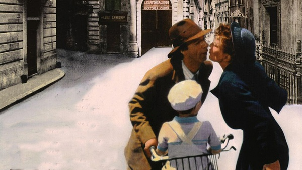
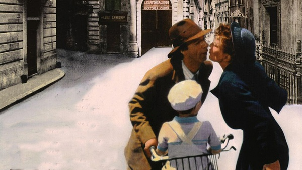

美丽人生

1939年春天，战争的阴麋笼罩着欧洲大地，憨厚而乐观的犹太青年基度来到了意大利阿雷佐的斯坎小镇准备开一家书店，途中邂逅了年轻美丽的女子多拉，多拉是镇里的小学教师，她的未婚夫是当地的一个纳粹走狗。基度认定多拉是他心中的公主，于是他凭着超人的幽默感和机智勇敢, 最终赢得多拉的爱情，几年后有了可爱的儿子乔舒亚，同时基多也实现了一生中最大的梦想即拥有一家自己的书店，一家三口过着祥和安宁的幸福生活。

1939年春天，战争的阴麋笼罩着欧洲大地，憨厚而乐观的犹太青年基度来到了意大利阿雷佐的斯坎小镇准备开一家书店，途中邂逅了年轻美丽的女子多拉，多拉是镇里的小学教师，她的未婚夫是当地的一个纳粹走狗。基度认定多拉是他心中的公主，于是他凭着超人的幽默感和机智勇敢, 最终赢得多拉的爱情，几年后有了可爱的儿子乔舒亚，同时基多也实现了一生中最大的梦想即拥有一家自己的书店，一家三口过着祥和安宁的幸福生活。